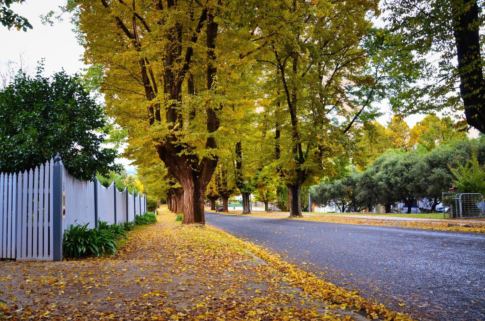
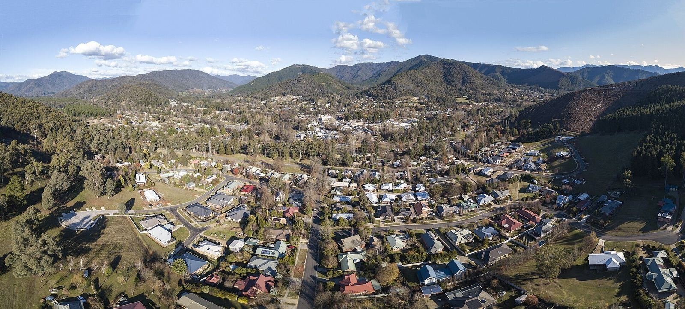
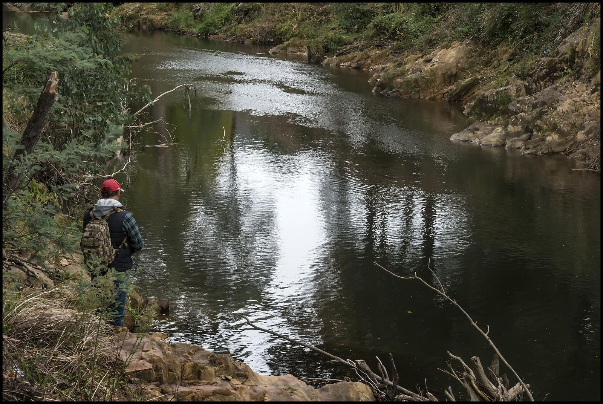
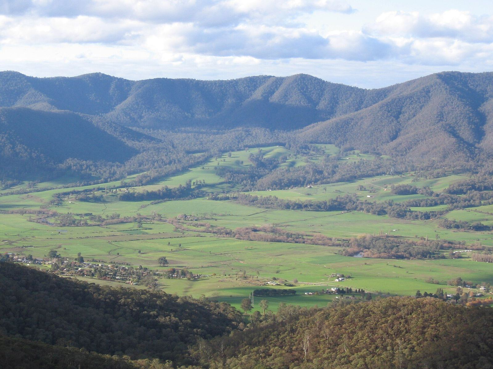

From the people who live here
Where we'd send you, how far it is from the gate and what to take with you.

Cycling and walking
The Rail Trail, from our gate
The Murray to Mountains Rail Trail passes our front gate. Easy rides to Bright, a longer day down the valley and what to bring.
Read the guide
Walks and snow
Mount Buffalo
Lookouts, walks and winter snow play, about 40 minutes away.

Food and wine
The wineries next door
Ringer Reef and Feathertop, a stroll from the gate.

Seasons
Bright in autumn
When the colour peaks, and the Autumn Festival.

On the property
Swimming in the Ovens
Where to get in, and what to know with children.

On the property
Wildlife at the cottages
Who you might meet, and when to look.

Day trips
A day in Bright
The river pool, markets, galleries and the ride into town.

Walking
Bushwalks near Porepunkah
Short walks by the river, up to lookouts and on Mount Buffalo.

On the river
Fishing and paddling
Trout, kayaks and launching from our own lawn.

Cycling
Cycling beyond the Rail Trail
Mystic Bike Park, the big climbs and bike hire in Bright.

Day trips
Snow days further afield
Hotham, Dinner Plain and Falls Creek, with a drying room to come home to.

Any weather
A rainy day
Films, galleries, the museum, and cheese at Milawa.

Alpine Riverside Cottages
See it all from here.
Choose your dates to see what's free.